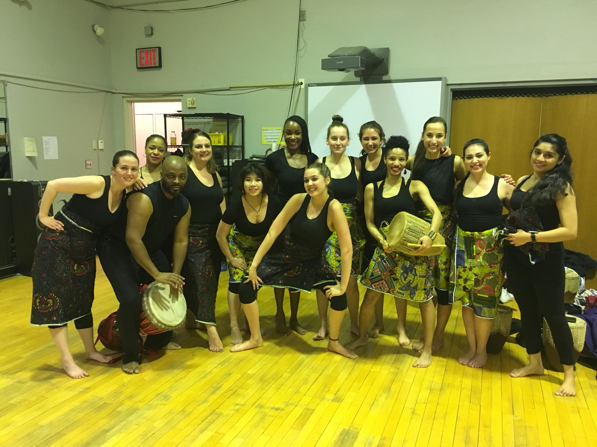
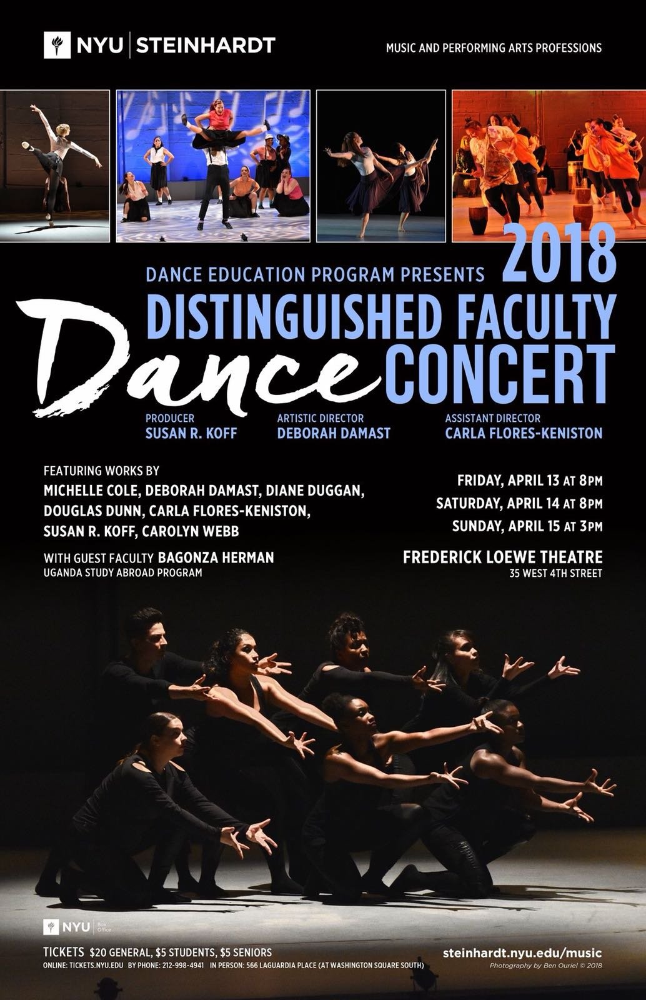
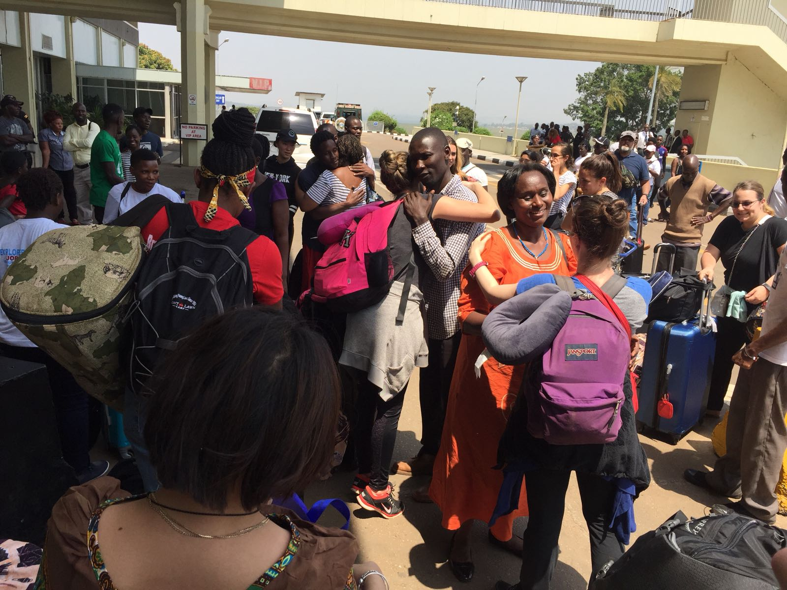
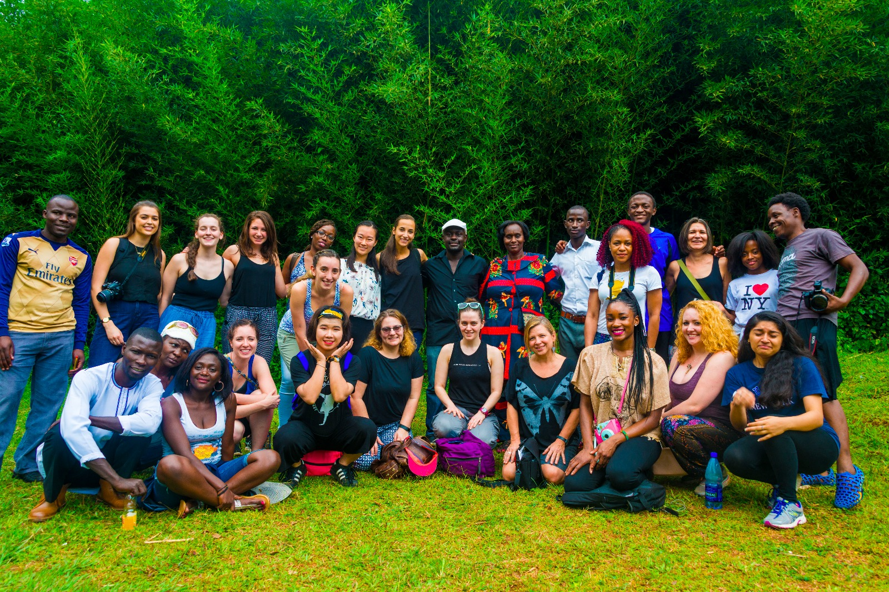
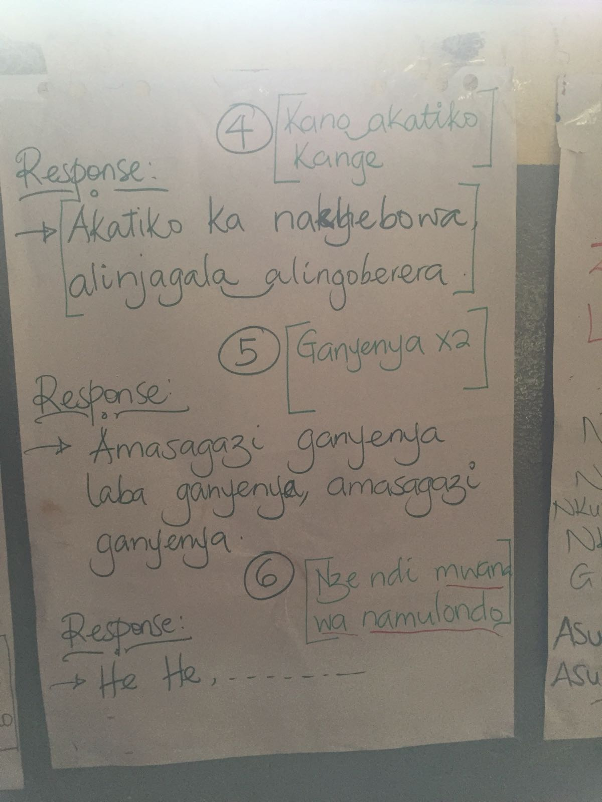
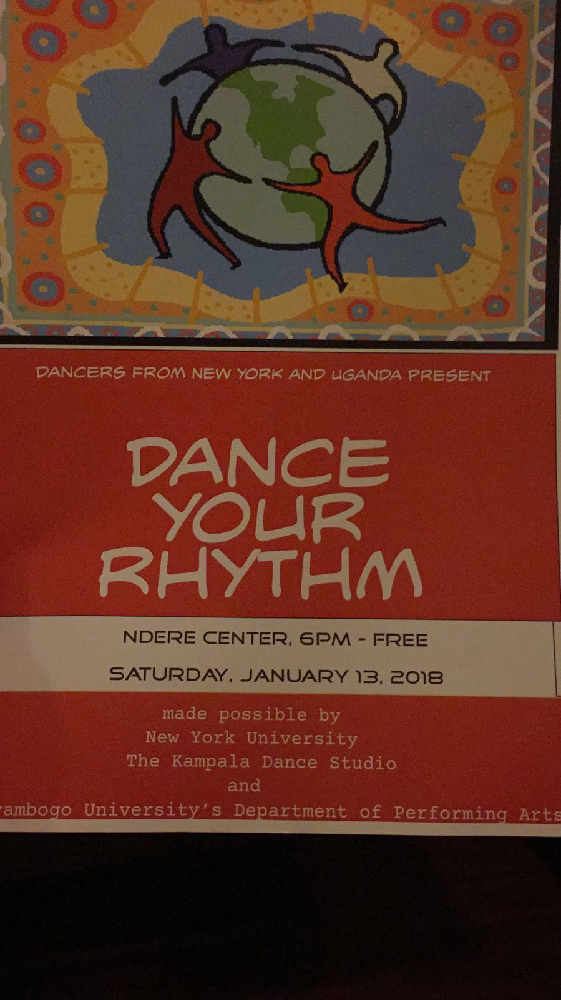
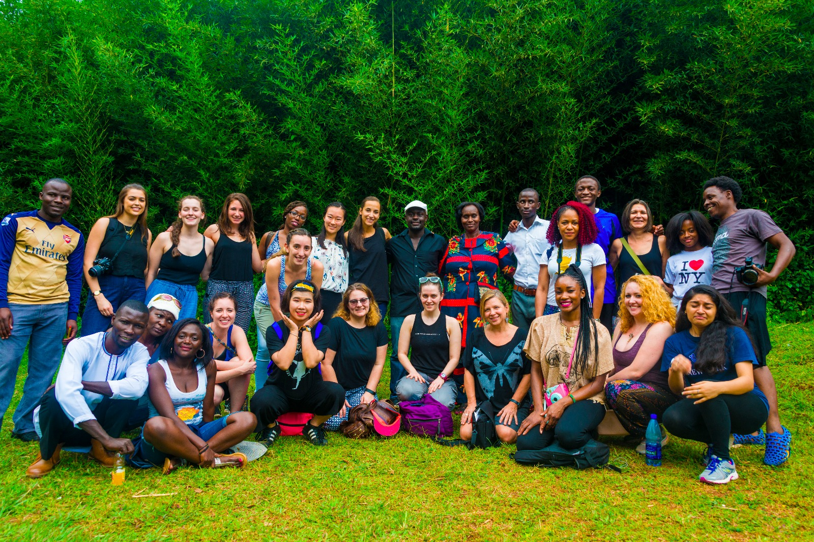
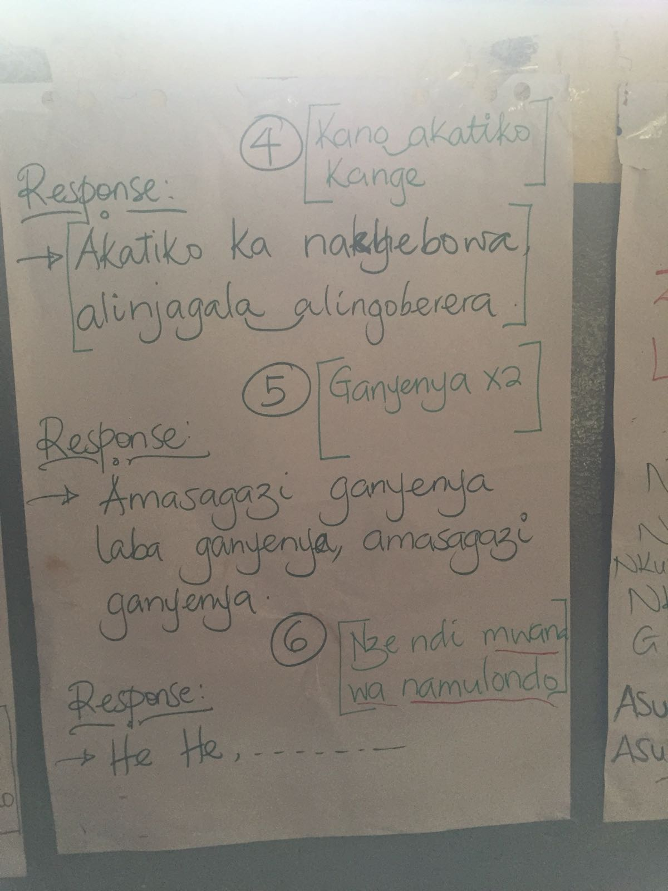
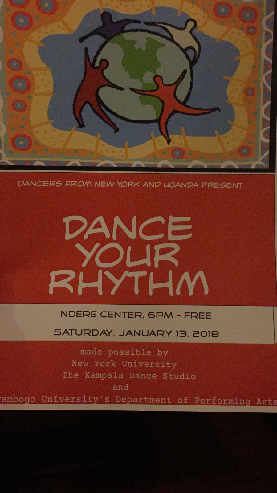

开始！
介绍
乌干达这个国家首都是kampala，是非洲历史上比较悠久的一个城市。15世纪后，这里是布干达的都城，“坎帕拉”一词在当地语的意思是“小羚羊之地”，据传说原是布干达国王放牧羊群的地方。布干达族是乌干达国内最大的民族，它的传统舞蹈欢快喜庆，热烈并且奔放，经常以分享生活的方式来进行演唱和舞蹈，在此期间提升了传统音乐文化的价值，布干达部落经常将不同的音乐与舞蹈区别开来，因为舞蹈都会带有各自的背景和故事，尤其是在节日当中，会进行编创和添加动作，女性表演者们通过臀部为主要表达方式，男性表演者们通过手和脚快速的跳动为主要表达方式，舞起来或轻盈曼妙，或热烈奔放，甚而夸张而疯狂，配之以节奏强烈，快慢结合的打击乐伴奏，虽然没有芭蕾的高雅，也无法与中国民间舞蹈的技巧媲美，却真实反映了非洲人民天真淳朴简单快乐的生活。就是在这样的一个环境下,衍生出了很多的传统音乐与舞蹈，他们共同的音乐风格是Kadongo Kamu（一把吉他），他们常见的传统音乐形式是Bakisimba，Nankasa和Amaggunju，它们主要在传统婚礼和皇家仪式中表演。他们常见的乐器是ngalabi（长圆形鼓），endongo，adungukadigindi（一种小提琴），竖琴和琵琶。这篇文章主要是针对于amagunju这支舞来展开的。Amaggunju是由Baganda演唱的舒缓摇篮曲。它的背景始于20世纪80年代，穆隆多国王死了，没有留下任何继承人。 幸运的是，他留下了许多正在期待的妻子，所以医学界的男医生和传统的巫医都在紧急寻找怀有男孩的妻子。 （这是一个由女人统治的王国的禁忌）。 其中一个妻子Namulondo正在期待一个男孩，所以她坐在宝座上，人们明白不是她的统治者，而是她未出生的儿子。 当这位王子出生时，他统治着他的宝座。 然而，布干达的国王不应该哭，因为这会给这个王国带来诅咒和厄运。 因此，年轻的王子的叔叔和阿姨创造了amaggunju舞蹈，以保持婴儿的微笑。 男人们把“脚踝铃铛”放在他们的腿上，男人跳舞时铃声的声音让王子高兴。 最初，这种舞蹈只是由Obutiko或Mushroom氏族的人们演出，而且只在宫殿里演出。 文化的多元性和包容性在这个有着13年历史的海外交流项目中有着深刻的体现。同时，作为一个土生土长的中国人和一个在美国留学的音乐教育领域的留学生，远赴西非乌干达学习当地民间传统音乐和舞蹈让我产生了更多意料之外的思考。Amaggunju是交流项目中我们深入学习的一支独具特色的乌干达民间舞蹈，本文将借由这只舞蹈在中美乌三国的传播，进一步探讨世界各民族非物质文化遗产在当代社会的传承问题。
Amaggunju 在
- 乌干达
- 美国
- 中国
Amaggunju 在乌干达
Amaggunju在乌干达的传播是充满生命力的，但是又是原始的。一方面，在这只民间舞蹈起源的地方，当地KYU和makelele university 的学生和老师用感染力、热情以及饱满的精神状态演绎的不仅仅是一支热烈的舞蹈，更是西非人民传承百年的民族精神。不会停歇的鼓点，不知疲倦的鼓手让我深感震撼。另一方面，即便受过高等教育的学生和老师，在传统音乐的承袭上，依然依靠旋律传唱的方式， 简谱五线谱并没有得到应用。主观上，学习者乐理知识相对匮乏，而更深层次的原因是能系统授课的音乐教师资源的匮乏。在传统音乐和西方乐理的整合上，人才更是凤毛麟角。此次交流项目的最后，NYU和KYU的师生将西方的现代芭蕾与非洲民间舞蹈相结合，是对传承音乐舞蹈一次有益的尝试。但是，如何在经济欠发达的情况下，拯救和传承非物质文化遗产还需要更多探索和努力。
Amaggunju 在美国
国际文化交流者通过对乌干达传统舞蹈创新的改编和演绎，使得舞蹈本身传达出了新的内涵。参加此次交流项目的纽约大学学生们自身在音乐舞蹈领域获得了成长，也在潜移默化中促进了世界多元文化的传播。在纽约的black history festival上，改编后的Amaggunju的演出获得了巨大的成功，非洲草原的热情给来自世界各地的纽约客们留下了深刻的印象。“different color， one people，different color，nice people”，每一个舞者将自己的国家唱了出来，Amaggunju演绎了community music and dance，更将整个世界变成了一个大community。文化包容和文化融合赋予了一个民族传统文化新的内核。另外，项目中一位两次参加的舞者引起我的注意，她作为一个parttime少儿舞蹈教练，积极地把非洲舞元素融入到踢踏舞的教学中，让Amaggunju以另一种形式得到了传承。不过，作为非洲传统文化的接受者，我们的观众和舞蹈学习者并不能深刻理解Amaggunju的真正内涵，Amaggunju在海外的传播过程中渐渐褪去了它本来的颜色，保守的文化传承者也许会对此诟病，如何在传承和创新中获得平衡也是一个需要进一步解决的问题。
Amaggunju 在中国
同样是传统文化的海外传播，与在文化大熔炉纽约不同，Amaggunju在中国的演绎有着显著的本土化特征以及商业色彩。通过项目，我解释了很多优秀的非洲舞者和鼓手，他们在中国的山东省青岛市和四川省成都市的state fair有专场表演。作为舞者也作为观众，令我惊奇的是，表演中竟然加入了中国流行歌曲，非洲演员们更是用中文与观众互动。两位舞者magoba和comsamba表示，Amaggunju是非洲的传统皇家舞蹈，使用通俗易懂的表演方式有利于中国观众对非洲文化的理解。但是，大部分中国观众对于非洲舞的认知还是停留在“疯狂的甩头”和“扭屁股”，而个别做文化研究的观众又对这种流行文化凌驾于传统文化之上的做法表示难以理解。为了进一步找到中国观众文化审美和非洲传统音乐舞蹈中的契合点，我本人主动参与到了演出中去，中国面孔配合中国流行音乐的熟悉感，再加上Amaggunju的新鲜感，让中国观众们拍案叫绝。传统文化在海外传播是一个包容兼蓄的过程，传统音乐舞蹈本土化和商业化在一定程度上能成为传统文化持久传承的动力，如何通过本土化去实现传统音乐舞蹈的商业价值需要更多的探索和努力。
想法
- 我
- 去过乌干达的朋友A
- 没去过乌干达的朋友B
我的想法
我很高兴与（乌干达的教学，创作，表演，舞蹈教育社区建设）计划进行沟通。 这个为期13年的海外交流计划体现了文化多样性和包容性。 同时，作为一名在美国学习音乐教育的当地华人和外国学生，在西非乌干达学习当地民间音乐和舞蹈，给了我更多意想不到的想法。 Amaggunju是一种独特的乌干达民间舞蹈，我们作为交流项目的一部分进行深入研究，通过这种舞蹈在乌干达，中国，美国这三个国家的传播，探索当今社会各族群的非物质文化遗产的传承。
去过乌干达的朋友A的想法
有一个舞蹈学院的朋友，已经参加了这个项目两次了，其中我就询问她为什么会参加两次，她说因为我热爱这里的人民，很享受这一过程，乌干达人民给他带来的是积极乐观向上的人生态度，让她自己也是为这群可爱的人感到骄傲，认为自己可以尽自己的能力去帮助这些渴望艺术的孩子，对于我来说是人生的一种财富与价值，是她在纽约不可能感受到的。对于她来说不仅仅是很好的经历，还是一个美好的回忆
没去过乌干达朋友B的想法
在中国，很多人对于乌干达这三个字非常的陌生，就算知道也认为是一个贫穷落后的国家，一个没有停息硝烟战火的国家，对于他们的艺术文化是很大的理解偏差，认为只有甩头和提臀，舞蹈和音乐之起源于非洲这一个整体，但是在国内有很多的大学也有交流项目，在医疗、军队和经济上也会带来一些资源，多半了解的主要对象是学生。在纽约，由于有一部分黑人的移民，他们的后裔有一部分分布于非洲的一些区域，黑人有一部分是知道乌干达这个地方的文化与艺术的，当然有一部分非洲艺术家在纽约有开设非洲舞和音乐的课程，每个高校也会开设一些非洲舞和鼓的课程和项目，多少会有一定的了解，也会开设专题的慈善音乐会，整体上会比中国了解多一些。
相关材料
图片
   





视频
参考文献
- Benign Neglect: African Dance and Music Placement in Academic. .Journal of Pan African Studies; Jun2017, Vol. 10 Issue 4, p30-42, 13p
- Music education unit standards for southern Africa: A model and its application in a general music appraisal program.
- The transformation of music education: A south African case study. 2015SourceBritish Journal of Music Education. Nov2015, Vol. 32 Issue 3, p315-322. 8p.
- Non-formal vocational education in Uganda: practical empowerment through a workable alternative In International Journal of Educational Development January 2013 33(1):88-97
- Sharing ownership in multicultural music: A hands–on approach in teacher educational in south Africa. Australian Journal of Music Education. 2012, Issue 2, p10-19
- Palgrave handbook of global arts education,2017 London: Palgrave Macmillan UK: Imprint: Palgrave Macmillan, 2017
- Sing for life：HIV/AIDS and music in Uganda Gregory Barz 2014-6-17
- Recounting migration：political narratives of Congolese young people in Uganda, Christina R.Clark-Kazak,2011-7-25
- Pillars of the nation: child citizens and Ugandan national development, Cheney, Kristen E`2008
- Intergenerational community –based Research and Creative Practice Promoting Environmental Sustainability in Jinja, Uganda. Journal of Intergenerational Relationships. 2017, 15 (4). 389-410. (22) McQuaid, Katie; Diprose, Kristina
- Keeping it in the family: cultural relatedness and hip-hop constellations in kampala, Uganda. Suomen Antropologi. Journal of the Finnish Anthropological Society. 2017, Vol. 42 Issue 2, p94-108. 15p. Schneidermann, Nanna1
- Chinese Traders in Kampala：Status challenges and impact on Ugandan society Ward Warmerdam and Meine Pieter VAN DIJK, 2016-12-01. Vol. 16 Issue 3/4, p129-148, 20p, 1 Chart, 6 Graphs, Database: Humanities Source
- Healing arts, STROPNICKY, GERARD. American Theatre, Mar2016, Vol. 33 Issue 3, p56-59, 4p
- Uganda, By: White, C. Todd; Our World: Uganda, 2017, p. 1, 6p
- Music from Uganda：1，traditional，2modern traditional，3.modern echoes of kampala, Linda Fujie. In: Yearbook for Traditional Music. 29:207-207; International Council for Traditional Music, 1997.